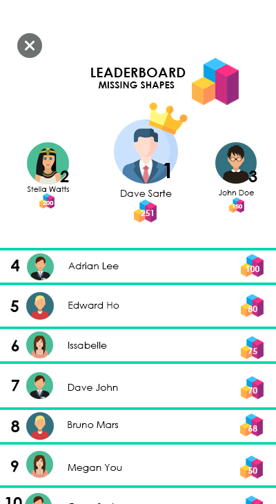

Behaviorism is a learning theory that only focuses on objectively observable behaviors and discounts any independent activities of the mind. Behavior theorists define learning as nothing more than the acquisition of new behavior based on environmental conditions.This theory is relatively simple to understand because it relies only on observable behavior and describes several universal laws of behavior. Its positive and negative reinforcement techniques can be very effective– such as in treatments for human disorders including autism, anxiety disorders and antisocial behavior. Behaviorism is often used by teachers who reward or punish student behaviors.
Skinner's Operant Conditioning
